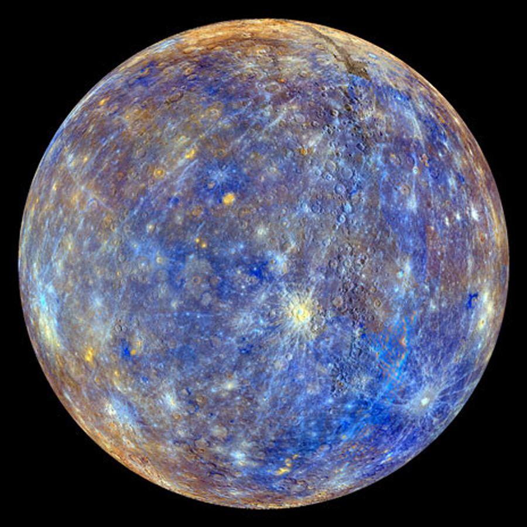

Невозможная планета: мог ли Меркурий образоваться в Солнечной системе
Учёные из Японии выяснили, что Меркурий почти ни при каких обстоятельствах не мог образоваться в Солнечной системе. Более того, при построении компьютерных моделей даже похожие на него планеты возникали довольно редко. В отличие от планет земного типа, которые в ходе моделирования получались регулярно. Как в Солнечной системе мог оказаться Меркурий — в материале RT.
9 шансов из 110
 Исследовательская группа из Университета Кинки при помощи компьютерного моделирования воспроизвела процесс формирования планет земной группы (Меркурий, Венера, Земля, Марс) в Солнечной системе. Особое внимание учёные уделили Меркурию, который находится ближе всего к Солнцу. Среднее расстояние между планетой и звездой составляет 58 млн км. Планетологи решили выяснить, в какой части Солнечной системы мог образоваться Меркурий. Однако, согласно их выводам, вероятность того, что планета в принципе сформировалась в этой системе, невелика.
{kind=link}
Учёные построили компьютерные модели с учётом различных факторов: наличия «зародышей» планет — веществ, которые позволяют им набирать массу, и процессов, которые происходят во время формирования планет. Они предприняли 110 попыток моделирования процессов в той зоне, где находится Меркурий. В результате планеты образовывались лишь 52 раза, среди них похожие на Меркурий — только в девяти случаях.
Планеты образовывались, если в так называемом протопланетном диске находилось около 100 «зародышей» и 6 тыс. планетезималей (тел на орбите протозвезды, которые формируются из частиц пыли протопланетного диска). Обычно при образовании планет планетезимали соединяются и образуют более крупные тела. В построенных моделях все аналоги Меркурия, кроме одного, образовывались из концентрированных сгустков пыли протопланетного диска, которые постепенно уплотнялись. Получившиеся небесные тела оказывались на расстоянии немного меньше среднего расстояния между Меркурием и Солнцем — от 0,27 до 0,34 астрономических единиц. Формирование сравнимых с Меркурием по массе планет занимало около 10 млн лет.
Стоит также отметить, что часто модель демонстрировала вероятность формирования Венеры и Земли. Иными словами, учёным в целом удалось воссоздать процесс образования системы, похожей на Солнце с наиболее близкими планетами. Марс, как и Меркурий, образовался только в 9 случаях.
Местный или чужестранец?
Происхождение и формирование самой маленькой планеты Солнечной системы (не считая Плутона) давно волнует исследователей. Меркурий имеет железное ядро, довольно тонкую каменистую оболочку и странную по сравнению с другими планетами орбиту. Он перемещается по вытянутой траектории, то приближаясь к Солнцу на 46 млрд км, то удаляясь на 70 млрд км. Такие орбиты могут получаться, если «блуждающая» планета, образовавшаяся в другой системе, попала под влияние силы тяготения звезды. Но против такой версии говорят данные о составе Марса. Также в известных случаях захвата планеты звездой «пришелец» оказывается на краю планетной системы.
Кроме того, снимки аппарата NASA Messenger предоставили интересные данные о рельефе планеты. Извержения вулканов на Меркурии начались около 3,5 млрд лет назад, а закончились только около миллиарда лет назад. Однако такой продолжительной вулканической активности на Меркурии, сформировавшемся около 4,5 млрд лет назад, быть не могло, если он образовался рядом с Солнцем. Эти данные позволяют предположить, что Меркурий мог по меньшей мере образоваться на более далёкой орбите, а потом приблизиться на современную. Модели, построенные учёными из Японии, также свидетельствовали о том, что первая планета от Солнца могла изменить орбиту и приблизиться к звезде.
Исследователи отмечают, что ни в одной из построенных моделей не получилось сформировать точную копию Меркурия. Даже самые близкие аналоги представляли собой более массивные планеты. При этом ни одного аналога дальше расстояния в 0,6 астрономических единиц не образовалось. Другие астрономы ранее уже выдвигали версию о том, что новообразованный Меркурий был массивнее современного. Прото-Меркурий, когда его формирование уже было закончено, мог столкнуться с другим крупным небесным телом. На раннем этапе жизни Солнечной системы такие события были нередки. В результате столкновения планета могла потерять значительную часть своей коры. Это объяснило бы и сравнительно крупное ядро при тонкой оболочке. Однако этот сценарий авторы работы не рассматривают.
Даже при небольших шансах образования Меркурия на расстоянии от 0,3 до 0,6 астрономических единиц от Солнца исследователи намерены продолжать изучать именно этот вариант. Из всех способов возможного образования этой планеты во внутренней части Солнечной системы он считается наиболее вероятным.